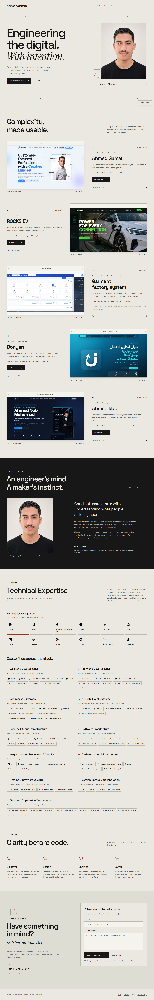
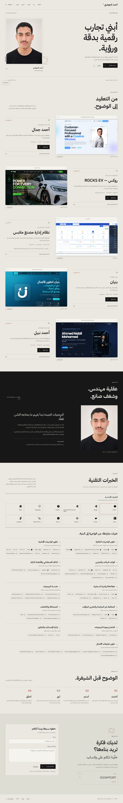
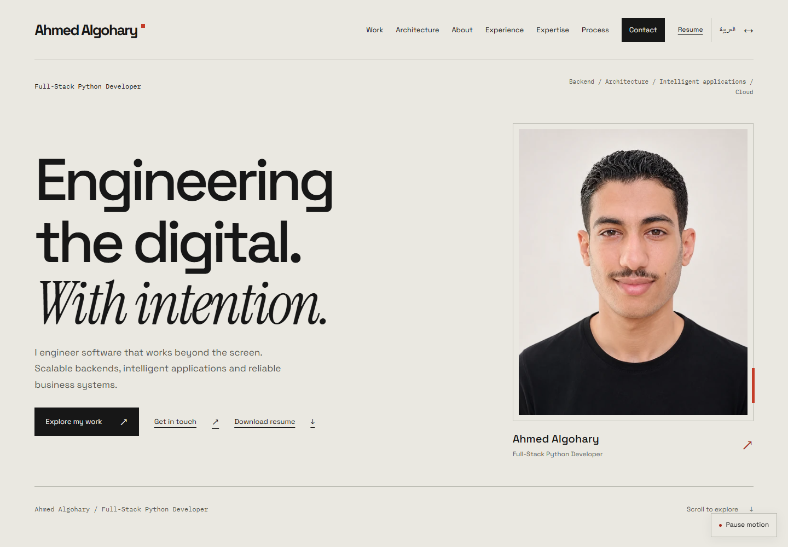
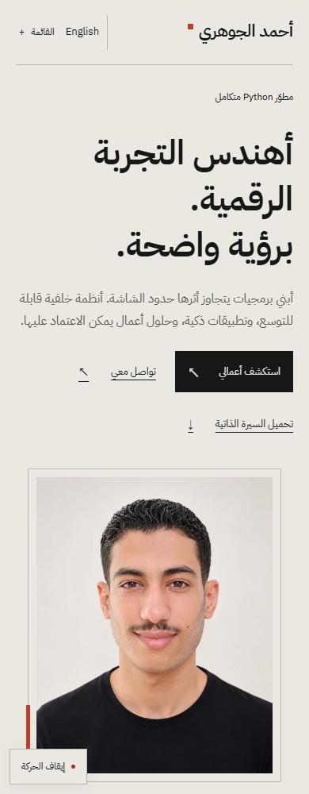

Portfolio transformation
Fresh local screenshots captured on 15 November 2026. Full-page comparisons use reduced motion for consistent layout; normal-motion examples show the original portrait in both desktop and mobile heroes. Open an image to inspect its original size.
English / 1440px



Arabic / 1440px



English / 390px


Arabic / 390px


Normal-motion hero



